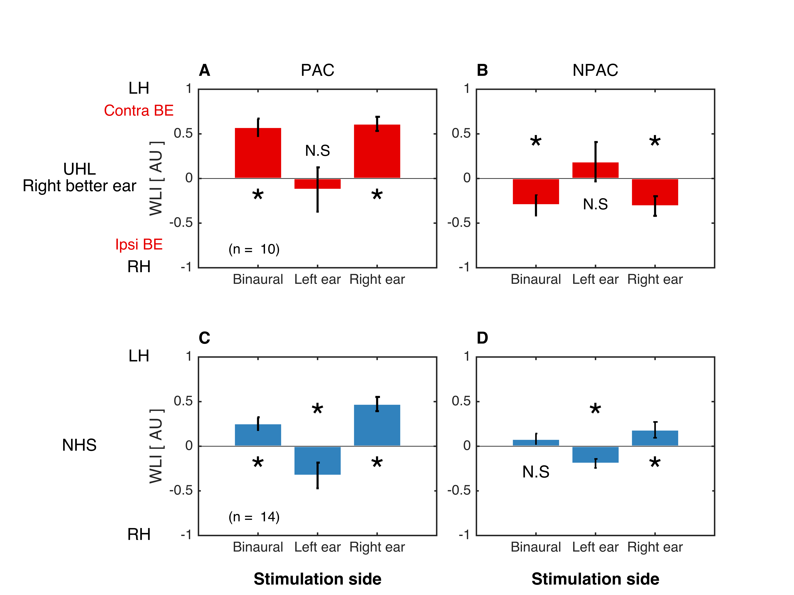
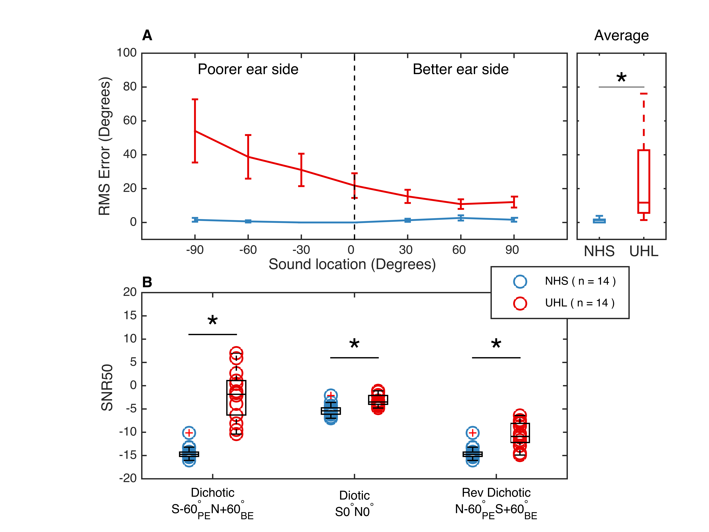
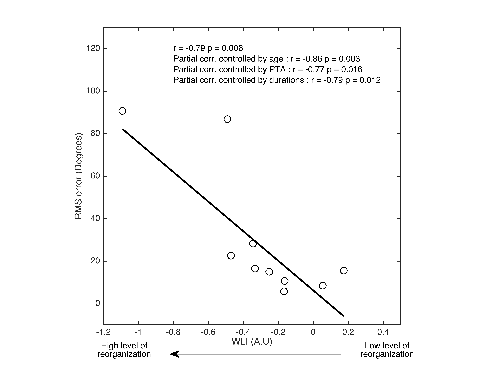

Matlab code from Vannson et al., 2020 (paper here)
This code has been simplified for displaying purposes. The primary objective of this study was to analyze fMRI timeseries data in order to correlate brain activation with psychoacoustic peformances of unilateral hearing loss subjects.This code is divided into 4 steps :
% Batch analyses IRMf
% Vannson, N. Toulouse, October 2015
% Vannson, N. Toulouse, December 2018
clear all
clc
% Cmd
name = input('nom du sujet[code]: ','s');
print_data = 1;
% Param
root = '/Users/nicolasvannson/Documents/NV_PhD';
source = [ root filesep 'Data_irm/Results'];
mfile = [ root filesep 'Tools/Matlab'];
img = [ root filesep 'PhD_img'];
nhldata = [ source filesep 'Groupe_NHL' filesep '022216' ];
uhldata = [ source filesep 'Groupe_UHL' filesep '022216' ];
Corr = [ mfile filesep 'Corr_toolbox_v2'] ;
spm_file = [ mfile filesep 'spm8'];
art_fold = [ source filesep article_fMRI filesep figures filesep all'];
source = '/Users/nicolasvannson/Documents/NV_PhD/Data_irm/Results';
police = 12;
font = 'bold';
scrsz = get(0,'ScreenSize');
graph_ext = '-dtiff';
reso = '-r1000';
col = [ 0.9 0 0 ; 0 0.8 0 ; 0 0 0.9 ;1 165/255 0; 0.5 0.5 0.5; 199/255 21/255 133/255;...
0/255 191/255 255/255 ; 250/2255 250/255 26/255];
letters = {'A','B','C','D','E','F','G','H'};
% mandatory parameters for SPM 8 and img preprocessing
spm_jobman('initcfg')
spm('defaults','FMRI')
nb_runs = 5;
nb_volumes = 42;
TR = 10.5;
TA = 2.084;
% create of folderpath where the results are stored
folderpath = [root_dir filesep 'img' ];
cd(folderpath)
% create a directory for the SPM.mat files and the contrats
pet_stat_folder = 'pet_stat';
if exist([ root_dir filesep pet_stat_folder],'dir') == 0
mkdir([ root_dir filesep pet_stat_folder])
end
model_spec_dir = [root_dir filesep pet_stat_folder];
% -------------------------------------------------------------------------
addpath(genpath(mfile))
addpath(genpath(spm_file))
% Prepare images
% -------------------------------------------------------------------------
anat = dir('*T13D4MN*.nii'); % look for T1 images and change the name
if isempty (anat) == 1
anat = dir('*t1W10min1*.nii'); % look for T1 images and change the name
end
for i = 1:size(anat,2)
img = anat(i).name;
if ~strncmp(img,'c',1) || ...
~strncmp(img,'o',1) || ...
~strncmp(img,'wc',2) && ...
~strncmp(img,'Anat',4);
% change output file
output_img = ['Anat_' img ];
img = load_untouch_nii(img);
save_untouch_nii(img,output_img)
end
% delete anat(i).name file
delete(anat(i).name)
end
% Reorient
% -------------------------------------------------------------------------
img_nii = dir('2015*nii');
[~,order] = sort_nat({img_nii.name});
img_nii = img_nii(order);
for i = 1 : (nb_runs * nb_volumes )
irun = sprintf('%s%s%s',folderpath,filesep,img_nii(i).name);
orun = sprintf('%s%s%s%s',folderpath,filesep,'p',img_nii(i).name);
reslice_nii(irun, orun);
nii = load_nii(orun);
nii = rri_orient(nii,[4 3 2]);
nii.hdr.dime.bitpix = 16;
nii.hdr.dime.datatype = 16;
save_nii(nii,orun);
end
% Realignemnt
% -------------------------------------------------------------------------
clear irun matlabbatch
spm_jobman('initcfg')
% create sessions
img_nii = dir('2016*nii');
[~,order] = sort_nat({img_nii.name});
img_nii = img_nii(order);
img_nii = reshape(img_nii,42,5); % reshape in order to use it more easily
irun = num2cell(zeros(nb_volumes,1));
for i = 1 : nb_runs
for j = 1: nb_volumes
irun{j,1} = sprintf('%s%s%s',folderpath,filesep,img_nii(j,i).name);
end
matlabbatch{1}.spm.spatial.realign.estwrite.data{i,1} = cellstr(irun);
end
matlabbatch{1}.spm.spatial.realign.estwrite.eoptions.quality = 0.9;
matlabbatch{1}.spm.spatial.realign.estwrite.eoptions.sep = 4;
matlabbatch{1}.spm.spatial.realign.estwrite.eoptions.fwhm = 5;
matlabbatch{1}.spm.spatial.realign.estwrite.eoptions.rtm = 1;
matlabbatch{1}.spm.spatial.realign.estwrite.eoptions.interp = 2;
matlabbatch{1}.spm.spatial.realign.estwrite.eoptions.wrap = [0 0 0];
matlabbatch{1}.spm.spatial.realign.estwrite.eoptions.weight = '';
matlabbatch{1}.spm.spatial.realign.estwrite.roptions.which = [2 1];
matlabbatch{1}.spm.spatial.realign.estwrite.roptions.interp = 4;
matlabbatch{1}.spm.spatial.realign.estwrite.roptions.wrap = [0 0 0];
matlabbatch{1}.spm.spatial.realign.estwrite.roptions.mask = 1;
matlabbatch{1}.spm.spatial.realign.estwrite.roptions.prefix = 'r';
spm_jobman('run',matlabbatch);
% Coregister
% -------------------------------------------------------------------------
clear irun matlabbatch
img_mean = dir('mean*.nii');
img_mean = fullfile(folderpath,img_mean.name);
refstruct = dir('co*nii');
refstruc = fullfile(folderpath,refstruct.name);
spm_jobman('initcfg')
matlabbatch{1}.spm.spatial.coreg.estimate.ref = {img_mean};
matlabbatch{1}.spm.spatial.coreg.estimate.source = {refstruc};
matlabbatch{1}.spm.spatial.coreg.estimate.other = {''};
matlabbatch{1}.spm.spatial.coreg.estimate.eoptions.cost_fun = 'nmi';
matlabbatch{1}.spm.spatial.coreg.estimate.eoptions.sep = [4 2];
matlabbatch{1}.spm.spatial.coreg.estimate.eoptions.tol = [0.02 0.02 0.02 0.001 0.001 0.001 0.01 0.01 0.01 0.001 0.001 0.001];
matlabbatch{1}.spm.spatial.coreg.estimate.eoptions.fwhm = [7 7];
spm_jobman('run',matlabbatch);
% Segmentation
% -------------------------------------------------------------------------
clear irun matlabbatch
spm_jobman('initcfg')
matlabbatch{1}.spm.spatial.preproc.data = {refstruc};
matlabbatch{1}.spm.spatial.preproc.output.GM = [0 0 1];
matlabbatch{1}.spm.spatial.preproc.output.WM = [0 0 1];
matlabbatch{1}.spm.spatial.preproc.output.CSF = [0 0 0];
matlabbatch{1}.spm.spatial.preproc.output.biascor = 1;
matlabbatch{1}.spm.spatial.preproc.output.cleanup = 0;
matlabbatch{1}.spm.spatial.preproc.opts.tpm = {
'/Users/nicolasvannson/Documents/NV_PhD/Tools/Matlab/spm8/tpm/grey.nii'
'/Users/nicolasvannson/Documents/NV_PhD/Tools/Matlab/spm8/tpm/white.nii'
'/Users/nicolasvannson/Documents/NV_PhD/Tools/Matlab/spm8/tpm/csf.nii'
};
matlabbatch{1}.spm.spatial.preproc.opts.ngaus = [1 1 1 4];
matlabbatch{1}.spm.spatial.preproc.opts.regtype = 'mni';
matlabbatch{1}.spm.spatial.preproc.opts.warpreg = 1;
matlabbatch{1}.spm.spatial.preproc.opts.warpco = 25;
matlabbatch{1}.spm.spatial.preproc.opts.biasreg = 0.0001;
matlabbatch{1}.spm.spatial.preproc.opts.biasfwhm = 60;
matlabbatch{1}.spm.spatial.preproc.opts.samp = 3;
matlabbatch{1}.spm.spatial.preproc.opts.msk = {''};
spm_jobman('run',matlabbatch);
% Normalization EPI towards template EPI
% -------------------------------------------------------------------------
clear irun matlabbatch
cd(folderpath)
% images
mean_img = [root_dir filesep 'img' filesep img_nii(1).name];
% check order of each volume
img_realign = dir('r*.nii');
[~,order] = sort_nat({img_realign.name});
img_realign = img_realign(order);
irun = num2cell(zeros(nb_volumes*nb_runs,1));
for i = 1 : nb_runs * nb_volumes
irun{i,1} = sprintf('%s%s%s',folderpath,filesep,img_realign(i).name);
end
img_realigned = irun;
spm_jobman('initcfg')
matlabbatch{1}.spm.spatial.normalise.estwrite.subj.source = {mean_img};
matlabbatch{1}.spm.spatial.normalise.estwrite.subj.wtsrc = '';
matlabbatch{1}.spm.spatial.normalise.estwrite.subj.resample = img_realigned;
matlabbatch{1}.spm.spatial.normalise.estwrite.eoptions.template = {'/Users/nicolasvannson/Documents/NV_PhD/Tools/Matlab/spm8/templates/EPI.nii,1'};
matlabbatch{1}.spm.spatial.normalise.estwrite.eoptions.weight = '';
matlabbatch{1}.spm.spatial.normalise.estwrite.eoptions.smosrc = 8;
matlabbatch{1}.spm.spatial.normalise.estwrite.eoptions.smoref = 0;
matlabbatch{1}.spm.spatial.normalise.estwrite.eoptions.regtype = 'mni';
matlabbatch{1}.spm.spatial.normalise.estwrite.eoptions.cutoff = 25;
matlabbatch{1}.spm.spatial.normalise.estwrite.eoptions.nits = 16;
matlabbatch{1}.spm.spatial.normalise.estwrite.eoptions.reg = 1;
matlabbatch{1}.spm.spatial.normalise.estwrite.roptions.preserve = 0;
matlabbatch{1}.spm.spatial.normalise.estwrite.roptions.bb = [-78 -112 -50 78 76 85];
matlabbatch{1}.spm.spatial.normalise.estwrite.roptions.vox = [3 3 3];
matlabbatch{1}.spm.spatial.normalise.estwrite.roptions.interp = 2;
matlabbatch{1}.spm.spatial.normalise.estwrite.roptions.wrap = [0 0 0];
matlabbatch{1}.spm.spatial.normalise.estwrite.roptions.prefix = 'w';
spm_jobman('run',matlabbatch);
% Normalization T1 towards template MNI
% -------------------------------------------------------------------------
% create a normalized T1 to use to superimpose on EPI
cd(folderpath)
clear irun matlabbatch
spm_jobman('initcfg')
T1 = dir('co*seg_sn.mat');
sub_T1 = [folderpath filesep T1.name];
mco = dir('mco*.nii');
img_mco = [folderpath filesep mco.name];
matlabbatch{1}.spm.spatial.normalise.write.subj.matname = {sub_T1};
matlabbatch{1}.spm.spatial.normalise.write.subj.resample = {img_mco};
matlabbatch{1}.spm.spatial.normalise.write.roptions.preserve = 0;
matlabbatch{1}.spm.spatial.normalise.write.roptions.bb = [-78 -112 -50 78 76 85];
matlabbatch{1}.spm.spatial.normalise.write.roptions.vox = [1 1 3];
matlabbatch{1}.spm.spatial.normalise.write.roptions.interp = 1;
matlabbatch{1}.spm.spatial.normalise.write.roptions.wrap = [0 0 0];
matlabbatch{1}.spm.spatial.normalise.write.roptions.prefix = 'w';
spm_jobman('run',matlabbatch);
% create an normlaized surface base on C1 and C2 to superimpose EPI
cd(folderpath)
clear matlabbatch irun
spm_jobman('initcfg')
norm_T1 = '/Users/nicolasvannson/Documents/NV_PhD/Tools/Matlab/spm8/templates/T1_seg_sn.mat';
c1 = dir('c1*.nii');
img_c1 = [folderpath filesep c1.name];
c2 = dir('c2*.nii');
img_c2 = [folderpath filesep c2.name];
matlabbatch{1}.spm.spatial.normalise.write.subj.matname = {norm_T1};
matlabbatch{1}.spm.spatial.normalise.write.subj.resample = {img_c1;
img_c2};
matlabbatch{1}.spm.spatial.normalise.write.roptions.preserve = 0;
matlabbatch{1}.spm.spatial.normalise.write.roptions.bb = [-78 -112 -50
78 76 85];
matlabbatch{1}.spm.spatial.normalise.write.roptions.vox = [3 3 3];
matlabbatch{1}.spm.spatial.normalise.write.roptions.interp = 1;
matlabbatch{1}.spm.spatial.normalise.write.roptions.wrap = [0 0 0];
matlabbatch{1}.spm.spatial.normalise.write.roptions.prefix = 'w';
spm_jobman('run',matlabbatch);
% Smooth
% -------------------------------------------------------------------------
clear irun matlabbatch
% go to the folderpath
cd(folderpath)
% check order of each volume
img_norm = dir('wr*.nii');
[~,order] = sort_nat({img_norm.name});
img_norm = img_norm(order);
irun = num2cell(zeros(nb_volumes*nb_runs,1));
for i = 1 : nb_runs * nb_volumes
irun{i,1} = sprintf('%s%s%s%s',folderpath,filesep,filesep,img_norm(i).name);
end
img_normed = irun;
spm_jobman('initcfg')
matlabbatch{1}.spm.spatial.smooth.data = img_normed;
matlabbatch{1}.spm.spatial.smooth.fwhm = [8 8 8];
matlabbatch{1}.spm.spatial.smooth.dtype = 0;
matlabbatch{1}.spm.spatial.smooth.im = 0;
matlabbatch{1}.spm.spatial.smooth.prefix = 's';
spm_jobman('run',matlabbatch);
% Model specification with PET MODULE
% -------------------------------------------------------------------------
clear irun matlabbatch
% load scans
% check order of each volume
cd(folderpath)
img_smooth = dir('swr*.nii');
[~,order] = sort_nat({img_smooth.name});
img_smooth = img_smooth(order);
irun = num2cell(zeros(nb_volumes*nb_runs,1));
for i = 1 : nb_runs * nb_volumes
irun{i,1} = sprintf('%s%s%s%s',folderpath,filesep,filesep,img_smooth(i).name);
end
img_smoothed = irun;
% regressors txt file
regressors_file = [root_dir filesep 'img' filesep 'regressors.txt'];
% conditions
addpath(genpath(mfile))
conditions = load('fmri_PET_7_Cond_5R');
conditions = conditions.condition;
% PET MODULE
% -------------------------------------------------------------------------
spm_jobman('initcfg')
matlabbatch{1}.spm.stats.factorial_design.dir = {model_spec_dir};
matlabbatch{1}.spm.stats.factorial_design.des.anovaw.fsubject.scans = img_smoothed;
matlabbatch{1}.spm.stats.factorial_design.des.anovaw.fsubject.conds = conditions;
sign.des.anovaw.dept = 1;
matlabbatch{1}.spm.stats.factorial_design.des.anovaw.variance = 1;
matlabbatch{1}.spm.stats.factorial_design.des.anovaw.gmsca = 1;
matlabbatch{1}.spm.stats.factorial_design.des.anovaw.ancova = 0;
matlabbatch{1}.spm.stats.factorial_design.cov = struct('c', {}, 'cname', {}, 'iCFI', {}, 'iCC', {});
matlabbatch{1}.spm.stats.factorial_design.masking.tm.tmr.rthresh = 0.8;
matlabbatch{1}.spm.stats.factorial_design.masking.im = 1;
matlabbatch{1}.spm.stats.factorial_design.masking.em = {''};
matlabbatch{1}.spm.stats.factorial_design.globalc.g_omit = 1;
matlabbatch{1}.spm.stats.factorial_design.globalm.gmsca.gmsca_yes.gmscv = 50;
matlabbatch{1}.spm.stats.factorial_design.globalm.glonorm = 2;
spm_jobman('run',matlabbatch);
% Estimation
% -------------------------------------------------------------------------
clear irun matlabbatch
file_spm = [model_spec_dir filesep 'SPM.mat'];
spm_jobman('initcfg')
spm('defaults','PET')
matlabbatch{1}.spm.stats.fmri_est.spmmat = {file_spm};
matlabbatch{1}.spm.stats.fmri_est.method.Classical = 1;
spm_jobman('run',matlabbatch);
% Contrats manager
% -------------------------------------------------------------------------
% define contrats
bnv = [1 0 0 0 0 0 -1];
bv = [0 1 0 0 0 0 -1];
lnv = [0 0 1 0 0 0 -1];
lv = [0 0 0 1 0 0 -1];
rnv = [0 0 0 0 1 0 -1];
rv = [0 0 0 0 0 1 -1];
bin = [1 1 0 0 0 0 -2];
left = [0 0 1 1 0 0 -2];
right = [0 0 0 0 1 1 -2];
clear irun matlabbatch
spm_jobman('initcfg')
spm('defaults','PET')
cd(model_spec_dir)
file_spm = [model_spec_dir filesep 'SPM.mat'];
matlabbatch{1}.spm.stats.con.spmmat = {file_spm};
matlabbatch{1}.spm.stats.con.consess{1}.tcon.name = 'bnv>silence ';
matlabbatch{1}.spm.stats.con.consess{1}.tcon.convec = bnv;
matlabbatch{1}.spm.stats.con.consess{1}.tcon.sessrep = 'none';
matlabbatch{1}.spm.stats.con.consess{2}.tcon.name = 'bv>silence';
matlabbatch{1}.spm.stats.con.consess{2}.tcon.convec = bv;
matlabbatch{1}.spm.stats.con.consess{2}.tcon.sessrep = 'none';
matlabbatch{1}.spm.stats.con.consess{3}.tcon.name = 'lnv>silence';
matlabbatch{1}.spm.stats.con.consess{3}.tcon.convec = lnv;
matlabbatch{1}.spm.stats.con.consess{3}.tcon.sessrep = 'none';
matlabbatch{1}.spm.stats.con.consess{4}.tcon.name = 'lv>silence';
matlabbatch{1}.spm.stats.con.consess{4}.tcon.convec = lv;
matlabbatch{1}.spm.stats.con.consess{4}.tcon.sessrep = 'none';
matlabbatch{1}.spm.stats.con.consess{5}.tcon.name = 'rnv>silence';
matlabbatch{1}.spm.stats.con.consess{5}.tcon.convec = rnv;
matlabbatch{1}.spm.stats.con.consess{5}.tcon.sessrep = 'none';
matlabbatch{1}.spm.stats.con.consess{6}.tcon.name = 'rv>silence';
matlabbatch{1}.spm.stats.con.consess{6}.tcon.convec = rv;
matlabbatch{1}.spm.stats.con.consess{6}.tcon.sessrep = 'none';
matlabbatch{1}.spm.stats.con.consess{7}.tcon.name = 'bin>silence';
matlabbatch{1}.spm.stats.con.consess{7}.tcon.convec = bin;
matlabbatch{1}.spm.stats.con.consess{7}.tcon.sessrep = 'none';
matlabbatch{1}.spm.stats.con.consess{8}.tcon.name = 'left>silence';
matlabbatch{1}.spm.stats.con.consess{8}.tcon.convec = left;
matlabbatch{1}.spm.stats.con.consess{8}.tcon.sessrep = 'none';
matlabbatch{1}.spm.stats.con.consess{9}.tcon.name = 'right>silence';
matlabbatch{1}.spm.stats.con.consess{9}.tcon.convec = right;
matlabbatch{1}.spm.stats.con.consess{9}.tcon.sessrep = 'none';
% delete previous contrats
matlabbatch{1}.spm.stats.con.delete = 1;
spm_jobman('run',matlabbatch);
Overall fMRI images after image preprocessing. Example of a comparison between normal hearing subject (NHS) and a left anacusis (total unilateral hearing loss on the left ear).
After image processing, in order to better characterize brain activity, a Weighted Local Index (WLI) has been computed and used within two regions of interest (ROIs): the primary auditory cortex (PAC) and the non-primary auditory cortex (NPAC). This index takes into account the intensity and the number of voxels within each ROI for both the left and right hemispheres. Therefore, after image processing, the WLI for each participant and each hemisphere was calculated, and the figure below displays the mean WLI values for each ROI and hemisphere.
% Display overall WLI for NHL and UHL subjects.
% load UHL data
cd(uhldata)
a = dir('data*');
u = load(a.name);
name = u.data.name_sujets;
loc = u.data.loc;
surdite = u.data.cote; % Deafness side
pta = u.data.audiometrie(:,1:2);
matrix = u.data.matrix;
dicho = u.data.matrix(:,1);
wli = u.data.irm;
duree = u.data.duree;
age = u.data.age;
b_PAC = wli(:,7);
b_NPAC = wli(:,16);
r_PAC = wli(:,9);
r_NPAC = wli(:,18);
l_PAC = wli(:,8);
l_NPAC = wli(:,17);
PAC = wli(:,1:6);
NPAC = wli(:,10:15);
% create vect_cote to sort UHL right (UHL_r)
for j = 1 : size(surdite,1)
if strcmp(surdite(j),'G') == 1
vect_surdite{j,1} = 1; % D better ear
else
vect_surdite{j,1} = 0; % G better ear
end
end
vect_surdite = cell2mat(vect_surdite);
% Select only right better ears (UHL_r; n = 10)
loc = loc(vect_surdite == 1); % 1 = left poorer ear side
mo = mo(vect_surdite == 1);
bo = bo(vect_surdite == 1);
b_PAC = b_PAC(vect_surdite == 1);
b_NPAC = b_NPAC(vect_surdite == 1);
r_PAC = r_PAC(vect_surdite == 1);
r_NPAC = r_NPAC(vect_surdite == 1);
l_PAC = l_PAC(vect_surdite == 1);
l_NPAC = l_NPAC(vect_surdite == 1);
PAC = PAC(vect_surdite == 1,:);
NPAC = NPAC(vect_surdite == 1,:);
age = age(vect_surdite == 1);
% load NHL data
clc
close
cd(nhldata)
x = dir('data*');
n = load(x.name);
nameN = n.data.name_sujets;
nage = n.data.age;
nwli = n.data.irm;
nmatrix = n.data.matrix;
nPAC = nwli(:,1:6);
nNPAC = nwli(:,10:15);
nb_PAC = nwli(:,7);
nb_NPAC = nwli(:,16);
nr_PAC = nwli(:,9);
nr_NPAC = nwli(:,18);
nl_PAC = nwli(:,8);
nl_NPAC = nwli(:,17);
nloc = n.data.loc(1:14,1);
naudio = n.data.audiometrie (1:14,1:2);
naudio = mean(naudio,2);
% Plot WLI figure with right better ears(UHL_r)
figure
set(gcf, 'units','normalized','outerposition',[0 0 .35 .6]);
for i = 1 : 4
subplot(2,2,i)
set(gca,'position',[xpos(i) idxfig(i) .3 .30])
hold on
box on
axis([0 4 -1 1])
text(min(xlim),max(ylim)+ max(ylim)/5,letters(i),'fontsize',police,'fontweight','bold')
set(gca,'Xtick',1:3,'Xticklabel',{'Binaural','Left ear','Right ear'},'fontsize',police-2)
if i == 1
q = bar(1,nanmean(b_PAC),'facecolor',col(1,:),'edgecolor','w');
q = bar(2,nanmean(l_PAC),'facecolor',col(1,:),'edgecolor','w');
q = bar(3,nanmean(r_PAC),'facecolor',col(1,:),'edgecolor','w');
b = errorbar(1,nanmean(b_PAC),nanstd(b_PAC)/sqrt(size(b_PAC,1)),'k');
c = errorbar(2,nanmean(l_PAC),nanstd(l_PAC)/sqrt(size(l_PAC,1)),'k');
e = errorbar(3,nanmean(r_PAC),nanstd(r_PAC)/sqrt(size(r_PAC,1)),'k');
end
set([b c e],'linewidth',1.5)
if i == 2
q = bar(1,nanmean(b_NPAC),'facecolor',col(1,:),'edgecolor','w'); % former col(5,:)
q = bar(2,nanmean(l_NPAC),'facecolor',col(1,:),'edgecolor','w'); % col(4,:)
q = bar(3,nanmean(r_NPAC),'facecolor',col(1,:),'edgecolor','w'); % col(6,:)
b = errorbar(1,nanmean(b_NPAC),nanstd(b_NPAC)/sqrt(size(b_NPAC,1)),'k');
c = errorbar(2,nanmean(l_NPAC),nanstd(l_NPAC)/sqrt(size(l_NPAC,1)),'k');
e = errorbar(3,nanmean(r_NPAC),nanstd(r_NPAC)/sqrt(size(r_NPAC,1)),'k');
end
set([b c e],'linewidth',1.5)
if i == 3
q = bar(1,nanmean(nb_PAC),'facecolor',col(2,:),'edgecolor','w');
q = bar(2,nanmean(nl_PAC),'facecolor',col(2,:),'edgecolor','w');
q = bar(3,nanmean(nr_PAC),'facecolor',col(2,:),'edgecolor','w');
b = errorbar(1,nanmean(nb_PAC),nanstd(nb_PAC)/sqrt(size(nb_PAC,1)),'k');
c = errorbar(2,nanmean(nl_PAC),nanstd(nl_PAC)/sqrt(size(nl_PAC,1)),'k');
e = errorbar(3,nanmean(nr_PAC),nanstd(nr_PAC)/sqrt(size(nr_PAC,1)),'k');
end
set([b c e],'linewidth',1.5)
if i == 4
q = bar(1,nanmean(nb_NPAC),'facecolor',col(2,:),'edgecolor','w'); % former col(1,:)
q = bar(2,nanmean(nl_NPAC),'facecolor',col(2,:),'edgecolor','w'); % col(2,:)
q = bar(3,nanmean(nr_NPAC),'facecolor',col(2,:),'edgecolor','w'); % col(3,:)
b = errorbar(1,nanmean(nb_NPAC),nanstd(nb_NPAC)/sqrt(size(nb_NPAC,1)),'k');
c = errorbar(2,nanmean(nl_NPAC),nanstd(nl_NPAC)/sqrt(size(nl_NPAC,1)),'k');
e = errorbar(3,nanmean(nr_NPAC),nanstd(nr_NPAC)/sqrt(size(nr_NPAC,1)),'k');
end
set([b c e],'linewidth',1.15)
if i == 1 || i == 3
ylabel ('WLI [ AU ]','fontsize',police)
text('string','RH','HorizontalAlignment','center','position',[-1 -1],'fontsize',police,'color','k')
text('string','LH','HorizontalAlignment','center','position',[-1 1],'fontsize',police,'color','k')
end
if i == 2
text('string','NPAC','HorizontalAlignment','center',...
'position',[ 2 max(ylim)+ max(ylim)/5],'fontsize',police,'color','k')
text('string','*','HorizontalAlignment','center','...
position',[1 .3],'fontsize',police+15,'color','k')
text('string','N.S','HorizontalAlignment','center',...
'position',[2 -.3],'fontsize',police-1,'color','k')
text('string','*','HorizontalAlignment','center',...
'position',[3 .3],'fontsize',police+15,'color','k')
end
if i == 1
text('string','PAC','HorizontalAlignment','center',...
'position',[ 2 max(ylim)+ max(ylim)/5],'fontsize',police,'color','k')
text('string',{'UHL';'Right better ear' },'HorizontalAlignment','center',...
'position',[-2 0 ],'fontsize',police,'color','k')
text(.5,-.8,{'(n = 10)'},'fontsize',police-2)
text('string',{'Ipsi BE'},'HorizontalAlignment','center',...
'position',[-1 -.75],'fontsize',police-1,'color',col(1,:))
text('string',{'Contra BE'},'HorizontalAlignment','center',...
'position',[-1 .75],'fontsize',police-1,'color',col(1,:))
text('string','*','HorizontalAlignment','center',...
'position',[1 -.3],'fontsize',police+15,'color','k')
text('string','N.S','HorizontalAlignment','center',...
'position',[2 .3],'fontsize',police-1,'color','k')
text('string','*','HorizontalAlignment','center',...
'position',[3 -.3],'fontsize',police+15,'color','k')
end
if i == 3 || i == 4
text('string','Stimulation side','HorizontalAlignment','center',...
'position',[ 2 -1.5],'fontsize',police,'color','k','fontweight','bold')
end
if i==3
text('string','NHS','HorizontalAlignment','center','position',[-2 0 ],'fontsize',police,'color','k') % former col(3,:)
text(.5,-.8,'(n = 14)','fontsize',police-2)
text('string','*','HorizontalAlignment','center','position',[1 -.3],'fontsize',police+15,'color','k')
text('string','*','HorizontalAlignment','center','position',[2 .3],'fontsize',police+15,'color','k')
text('string','*','HorizontalAlignment','center','position',[3 -.3],'fontsize',police+15,'color','k')
end
if i==4
text('string','N.S','HorizontalAlignment','center','position',[1 -.3],'fontsize',police,'color','k')
text('string','*','HorizontalAlignment','center','position',[2 .3],'fontsize',police+15,'color','k')
text('string','*','HorizontalAlignment','center','position',[3 -.3],'fontsize',police+15,'color','k')
end
if print_data == 1
cd(art_fold)
print (graph_ext,reso,'FIG5_WLI_RIGHT')
end

Following the WLI analysis, the unilateral hearing loss seems to affect the NPAC ROI only. This brain reorganization is marked by an activation towards the ipsilateral hemisphere: i.e a right ear stimulation induces a right hemisphere activation.
% Speech-in-noise (Matrix) and localisation (LOC) performances
% Recompute LOC for plotting purposes
cd(source)
folders = dir('*');
cnt = 0;
for j = 3:size(folders,1)% avoid roots (./..)
na = folders(j).name;
if folders(j).isdir == 0
continue
end
% go to psycho subfolder
cd([source filesep na filesep 'psycho'])
% look for .bdf dataset
locdata = dir('*_HP7.mat');
if isempty(locdata) == 1
disp([ na ' no loc data'])
continue
else
d = load(locdata.name);
e = d.dataFF.raw(:,2);
f = sortrows(e);
baseline = d.dataFF.raw(:,1);
all = [baseline e];
all = sortrows(all,1);
[r1,~] = find(all(:,1) == -90);
hp1 = all(r1,:);
error1 = hp1(:,1) - hp1(:,2);
rms_hp1 = sqrt(nanmean(error1.^2));
[r2,~] = find(all(:,1) == -60);
hp2 = all(r2,:);
error2 = hp2(:,1) - hp2(:,2);
rms_hp2 = sqrt(nanmean(error2.^2));
[r3,~] = find(all(:,1) == -30);
hp3 = all(r3,:);
error3 = hp3(:,1) - hp3(:,2);
rms_hp3 = sqrt(nanmean(error3.^2));
[r4,~] = find(all(:,1) == 0);
hp4 = all(r4,:);
error4 = hp4(:,1) - hp4(:,2);
rms_hp4 = sqrt(nanmean(error4.^2));
[r5,~] = find(all(:,1) == 30);
hp5 = all(r5,:);
error5 = hp5(:,1) - hp5(:,2);
rms_hp5 = sqrt(nanmean(error5.^2));
[r6,~] = find(all(:,1) == 60);
hp6 = all(r6,:);
error6 = hp6(:,1) - hp6(:,2);
rms_hp6 = sqrt(nanmean(error6.^2));
[r7,~] = find(all(:,1) == 90);
hp7 = all(r7,:);
error7 = hp7(:,1) - hp7(:,2);
rms_hp7 = sqrt(nanmean(error7.^2));
end
% find subject within the name list of UHL
index = find(ismember(name,na));
% do it only for UHL
if isempty(index) == 1
cnt = cnt +1;
Nloc(:,cnt) = e;
Nloc2(:,cnt) = f;
na_nhl(cnt,1) = {na};
NLOC(cnt,1) = rms_hp1; %nanmean(error1);
NLOC(cnt,2) = rms_hp2;%nanmean(error2);
NLOC(cnt,3) = rms_hp3;%nanmean(error3);
NLOC(cnt,4) = rms_hp4;%nanmean(error4);
NLOC(cnt,5) = rms_hp5;%%nanmean(error5);
NLOC(cnt,6) = rms_hp6;%%nanmean(error6);
NLOC(cnt,7) = rms_hp7;%%nanmean(error7);
else
Uloc(:,index) = e;
Uloc2(:,index) = f;
na_uhl(index,1) = {na};
ULOC(index,1) = rms_hp1; %nanmean(error1);
ULOC(index,2) = rms_hp2;%nanmean(error2);
ULOC(index,3) = rms_hp3;%nanmean(error3);
ULOC(index,4) = rms_hp4;%nanmean(error4);
ULOC(index,5) = rms_hp5;%%nanmean(error5);
ULOC(index,6) = rms_hp6;%%nanmean(error6);
ULOC(index,7) = rms_hp7;%%nanmean(error7);
end
cd(source)
end
% Ulocr from the big ULOC
Ulocr = ULOC(vect_surdite == 1,:); % right
UlocL = ULOC(vect_surdite == 0,:); % left
% flip UlocL in order to have every poorer ears on the same side
Ulocr = fliplr(Ulocr);
% combine again
ULOC_final = [Ulocr ; UlocL];
% Plot
nbsujets = 14;
matrixleg = {['NHS ( n = ' num2str(nbsujets) ' )'] ,['UHL ( n = ' num2str(nbsujets) ' )'],};
nhl_inv = nanmean([nmatrix(:,1) nmatrix(:,3)],2);
figure
set(gcf,'color','w')
% All comparison were done using bootstrappring
% Ex: bootci(10000,@nanmean,nanmean(ULOC_final)) vs bootci(10000,@nanmean,nanmean(NLOC))
% LOC
subplot 211
set(gca,'position',[0.2 0.55 .6 .35])
box on
hold on
box on
hold on
lu = errorbar(1:7, nanmean(ULOC_final),nanstd(ULOC_final)./sqrt(14),'linewidth',1,'color',col(1,:));
ln = errorbar(1:7, nanmean(NLOC),nanstd(NLOC)./sqrt(14),'linewidth',1,'color',col(2,:));
set(lu,'linewidth',1.5);
set(ln,'linewidth',1.5);
set(gca,'Xtick',1:7,'Xticklabel',-90:30:90)
xlabel ('Sound location (Degrees) ','fontsize',police)
ylabel('RMS Error (Degrees)','fontsize',police)
axis([0 8 -10 100])
line([4 4],[-10 100],'color','k','linestyle','--')
text('string','Poorer ear side','HorizontalAlignment','center','position',[2 90],'fontsize',police)
text('string','Better ear side','HorizontalAlignment','center','position',[6 90],'fontsize',police)
text(min(xlim),max(ylim)+ max(ylim)/10,letters(1),'fontsize',police,'fontweight','bold')
% mean LOC
axes('position',[0.82 0.55 0.12 0.35])
hold on
l = boxplot(nanmean(ULOC_final,2),'pos',3,'color',col(1,:),'width',.5);
%l = boxplot((loc),'pos',3,'color',col(1,:),'width',.5);
nl = boxplot(nanmean(NLOC,2),'pos',1,'color',col(2,:),'width',.5);
set(l,'linewidth',1.5)
set(nl,'linewidth',1.5)
axis([0 4 -10 100])
set(gca,'xtick',[1 3],'xticklabel',{'NHS','UHL'},'fontsize',police)
set(gca,'yticklabel', {' '})
% line
line([1 3],[80 80],'color',[.5 .5 .5],'linewidth',1)
text('string','*','HorizontalAlignment','center','position',[2 80],'fontsize',police+15)
text('string','Average','HorizontalAlignment','center','position',[2 110],'fontsize',police)
% MATRIX
subplot 212
set(gca,'position',[0.2 0.1 .6 .35])
box on
hold on
hN = plot(1,nhl_inv,'o',4,nmatrix(:,2),'o',7,nhl_inv,'o',...
'markeredgecolor',col(2,:),'markersize',10,'linewidth',1.5);
hU = plot([2 5 8],matrix(:,1:3),'o',...
'markeredgecolor',col(1,:),'markersize',10,'linewidth',1.5);
q = boxplot([nhl_inv nmatrix(:,2) nhl_inv ],'pos',[1 4 7],'color','k','width',.4);
q = boxplot(matrix,'pos',[2 5 8],'color','k','width',.4);
set(gca,'XTickLabel',{' '})
axis([0 9 -20 20 ])
text(min(xlim),max(ylim)+ max(ylim)/10,letters(2),'fontsize',police,'fontweight','bold')
% gca options
set(gca,'Tickdir','in')
set(gca,'Xtick',[1.5,4.5,7.5])
ylabel('SNR50 ','fontsize',police)
% text to add details to the figure
text('string',{'Dichotic';'S-60^°_P_EN+60^°_B_E'},'HorizontalAlignment','center',...
'position',[1.5 -25.5],'fontsize',police-2)% dicho
text('string',{'Diotic';'S0^°N0^°'},'HorizontalAlignment','center',...
'position',[4.5 -25.5],'fontsize',police-2)%dio
text('string',{'Rev Dichotic';'N-60^°_P_ES+60^°_B_E'},'HorizontalAlignment','center',...
'position',[7.5 -25.5],'fontsize',police-2) % inv
% legend
hleg = legend([hN(1,1) hU(1,1)],matrixleg);
set(hleg,'Position',[0.69 0.4 0.2 0.1])
% text
text('string','*','HorizontalAlignment','center','position',[1.5 12],'fontsize',police+15)
text('string','*','HorizontalAlignment','center','position',[4.5 7],'fontsize',police+15)
text('string','*','HorizontalAlignment','center','position',[7.5 7],'fontsize',police+15)
% line
line([1 2],[11 11],'linestyle','-','color','k')
line([4 5],[6 6],'linestyle','-','color','k')
line([7 8],[6 6],'linestyle','-','color','k')
if print_data == 1
cd(art_fold)
print (graph_ext,reso,'FIG2_PSYCHOAC')
end
% stats
[r,p] = corr(mo,loc,'type','kendall')
[r,p] = corr(mo,dicho,'type','kendall')
%[r,p] = corr(loc,dicho,'type','kendall')

% Correlations WLI and behavioral
figure
set(gcf, 'units','normalized','outerposition',[0 0 .6 .6]);
hold on;box on;
x = r_NPAC; y = loc; %z = mo; w = age;
x2 = -1.15:.15:.2;x2 = transpose(x2);
[p,Er] = polyfit(x2,y,1);
[y_fit,delta] = polyval(p,x2,Er);
plot(x,y,'ok','markersize',8)
[brob, st2] = robustfit(x,y);
plot(x,brob(1)+brob(2)*x,'k','LineWidth',2);
axis([-1.2 .5 -10 130])
axis square
xlabel('WLI (A.U)')
ylabel('RMS error (Degrees)')
% plot errors
% plot(x2,y_fit+delta,'r--')
% plot(x2,y_fit-delta,'r--')
[rho,p] = corr(r_NPAC,loc,'type','pearson');
[rho_age,p_age] = partialcorr(r_NPAC,loc,age,'type','Pearson');
[rho_mo,p_mo] = partialcorr(r_NPAC,loc,mo,'type','Pearson');
[rho_dur,p_dur] = partialcorr(r_NPAC,loc,duree,'type','Pearson');
text(-.8,120,sprintf('r = %2.2f p = %2.3f',rho,p),'color','k','fontsize',10);
text(-.8,115,sprintf('Partial corr. controlled by age : r = %2.2f p = %2.3f',...
rho_age,p_age),'color','k','fontsize',10);
text(-.8,110,sprintf('Partial corr. controlled by PTA : r = %2.2f p = %2.3f',...
rho_mo,p_mo),'color','k','fontsize',10);
text(-.8,105,sprintf('Partial corr. controlled by durations : r = %2.2f p = %2.3f',...
rho_dur,p_dur),'color','k','fontsize',10);
% AnnotationS
annotation(gcf,'arrow',...
[0.7 0.35],...
[0.03 0.03]);
annotation(gcf,'textbox',...
[0.18 0.03 0.15 0.038],...
'String',{'High level of';'reorganization'},'fontsize',10,...
'lineStyle','none',...
'horizontalalignment','center');
annotation(gcf,'textbox',...
[0.72 0.03 0.15 0.038],...
'String',{'Low level of';'reorganization'},'fontsize',10,...
'lineStyle','none',...
'horizontalalignment','center');
if print_data == 1
cd(art_fold)
print(graph_ext,reso,FIG6_Loc_WLI')
end
